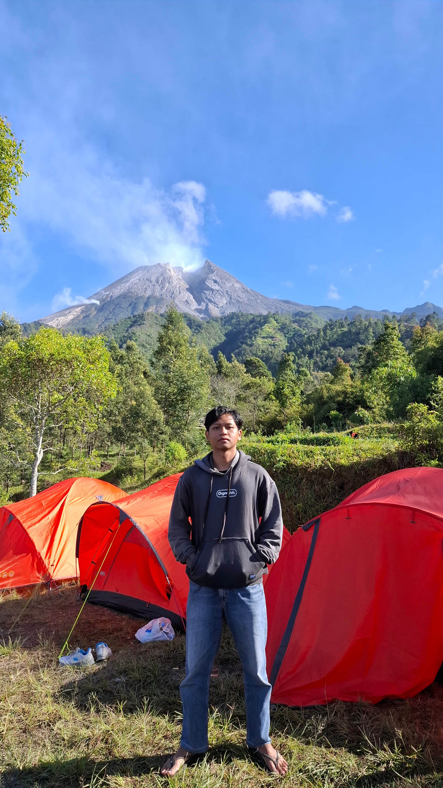
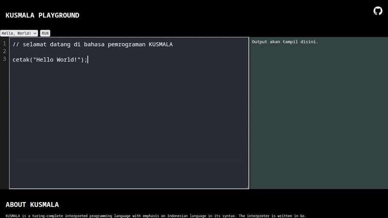
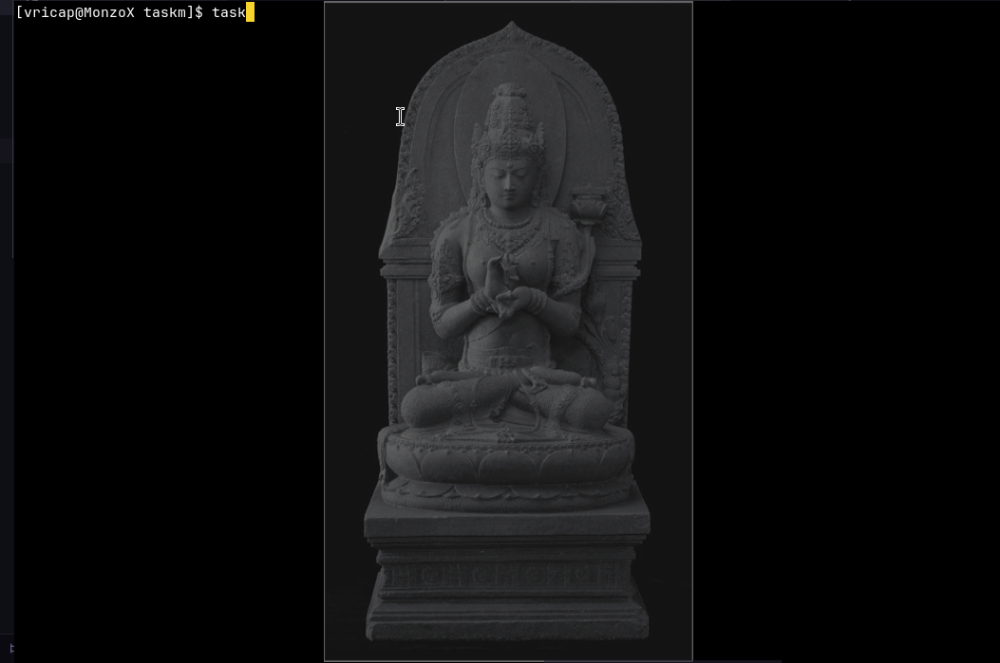

Vrica Gede Penggalih
Flexible engineer that comfortable and capable using various technologies.
About Me
Background, education, and approach to software development.

I am Vrica Gede Penggalih, a software engineer with experience across full-stack web development and low-level software engineering. Beyond traditional web apps, I enjoy engineering custom CLI tools and even built my own interpreted programming language from scratch.
I am a flexible engineer comfortable working with various tech stacks, from high-level web frameworks like React and Laravel to raw socket network programming and compiler development.
I run Arch Linux as my daily driver. I appreciate its speed, transparency, and alignment with my core engineering belief: simplicity over artificial complexity. When writing software, I strive to embody the UNIX philosophy, prioritizes modularity and simplicity.
Information Technology. IPK 3.66
Technical Skills
Core programming languages, web stacks, databases, architecture, and developer tools.
-
Languages
-
Web Technologies
-
Database
-
Concepts & Architecture
-
Tools & Platform
Selected Projects
A selection of key projects I've designed and built. Visit my GitHub for more.
A interpreted programming language written in Go with syntax focused on the Indonesian Language. Features its own lexer, parser, evaluator, and detailed line-number error reporting.
- Data types: string, integer, boolean, and arrays
- High-order and first-class functions support
- Conditional statements and rich expression evaluation
- Designed language grammar and execution model from scratch
- Includes online web playground & CLI execution engine
- ~3000 lines of handwritten code (didn't use AI)

An enterprise Document Management System created for client PT Aino Indonesia as part of my University Capstone Project. I serve as the only developer on the team.
- Supports sequential, parallel, group-based digital signing workflows
- Supports Upload, View, Send, Sign, Audit, Download, Filtering and Delete document.
- Drag & drop signature placement with visual signature overlay
- Authorization with RBAC and authentication with JWT.
- Inlcudes Admin role.
A lightweight HTTP server library for Go, built from scratch using TCP connections without relying on Go's http package, giving deep insight into http ptocol and network-level backend development.
- Implemented an HTTP server directly on top of Go's net TCP package.
- Built HTTP request parsing and response handling from the ground up.
- Designed a simple routing system supporting HTTP methods and custom handlers.
- Added static file serving for documents and media.
- Implemented configurable HTTP response headers and status codes.
- Added JSON and byte-based response support.
- Designed the library with a simple API for defining routes and starting the server.
h := http.Init()
h.LoadStatic("/static", "./resource")
h.Routes = []*http.Routes{
{
Path: "/api/foo",
Method: "GET",
Handler: func(h *http.Http) {
h.Response.Headers.SetStatusCode(200)
h.Response.Headers.ContType = "application/json"
h.Response.Body.Byte([]byte(`{"status":"ok"}`))
},
},
}
h.StartServer("127.0.0.1", ":8000")
A fast CLI tool see running processes and overview of a computer written in Go for Linux systems. Provides a clean overview of running processes and summary information of computer hardware and software.
- Monitors system processes and resource consumption based on RAM usage
- See information about computer hardware and software
- Display information about Operating System, RAM, CPU, DISK, Network, GPU and user
- Built specifically for Linux environments

A web-based OCR application for recognizing Javanese language from images and converting it into digital text. Built with Golang for the backend and Tesseract OCR as the recognition engine, featuring a clean and minimal interface with image preview, drag-and-drop upload, OCR processing, and downloadable text results.
- Built a web-based Javanese OCR application using Golang and Tesseract OCR.
- Implemented image upload, drag-and-drop, real-time image preview, OCR text extraction, and downloadable output
- Used tessdata_best model provided by the tesseract engine community.
- Containerized the app with Docker. Available at Docker Hub
A lightweight command-line utility for compressing and extracting files and folders using ZIP archives. Built with Go, Zipper provides a simple CLI interface for quickly zipping individual files, multiple files, or entire directories, as well as extracting ZIP archives to a specified destination.
- Zip individual files or multiple files or even entire directories
- Extract ZIP archives with custom destination paths
- Simple command-line interface
- Lightweight and fast
// ZIP MULTIPLE FILES
$ zipper -z -fl [task1.pdf task2.pdf] homework
// ZIP A FOLDER
$ zipper -z -fd my-project backup
// UNZIP AN ARCHIVE
$ zipper -u homework.zip homework-done
Work Experience
Professional internships and community teaching experience.
Engineered an internal Enterprise Resource Planning (ERP) Project Dashboard to streamline tracking across company-wide projects. Implemented using Laravel and PostgreSQL with a robust Role-Based Access Control (RBAC) architecture.
Taught basic programming to vocational high school students during KKN at Gunung Kidul. Utilized BAIK—a programming language featuring Indonesian syntax—allowing students to quickly grasp core programming logic, algorithms, and flow control.
Certificates & Published Papers
Professional certifications, academic publications, and research achievements.
Published Papers
Certificates
Product / Software Intern
Backend Developer
Machine Learning Pemula
Multi-Platform Flutter
AWS Cloud Practitioner
Dasar Programming JavaScript
Python Programming
Dasar Artificial Intelligence
Programming Dart
Visualisasi Data
Feel Free To Reach Out
Need anything? Just address me.